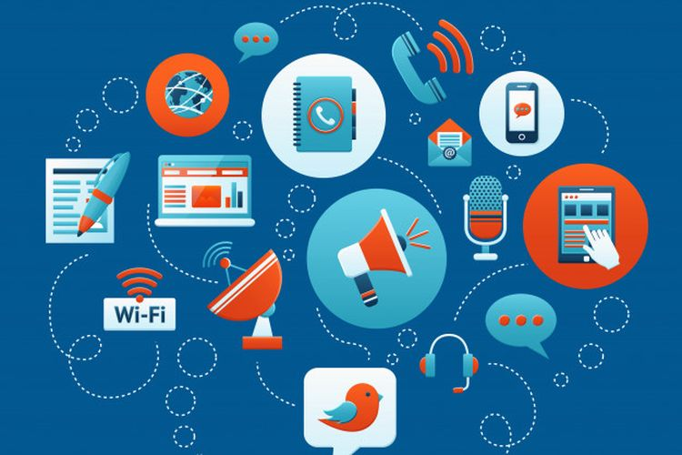

Perkembangan Teknologi dalam Bidang Informasi
Dalam era di mana informasi menjadi kekuatan utama, perkembangan teknologi dalam bidang informasi telah meretas batas-batas kemungkinan manusia. Setiap tahunnya, inovasi teknologi memberikan fondasi yang lebih kokoh bagi kemajuan dunia informasi, mengubah cara kita bekerja, berkomunikasi, dan hidup secara keseluruhan. Artikel ini akan menjelajahi beberapa tren terkini dalam perkembangan teknologi informasi dan dampaknya pada masyarakat.
Baca Selengkapnya

Sejarah Teknologi Informasi
Teknologi informasi menggambarkan perkembangan peradaban manusia yang diiringi melalui perkembangan cara penyampaian informasi. Dulunya manusia purba menyampaikan informasi melalui lukisan di dinding-dinding goa. Sekarang arus informasi sudah bisa diakses dengan mudah melalui internet.
Baca Selengkapnya